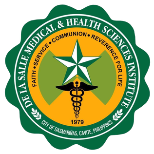

Academic Information
De La Salle Medical and Health Sciences Institute
City of Dasmariñas, Cavite
17-0685-170||Doctor of Medicine
Alaine M. Sabigan||AY 2017-2021
De La Salle University-Dasmariñas
City of Dasmariñas, Cavite
201301926||Bachelor of Science in Biology: Major in Human Biology
Alaine M. Sabigan||AY 2013-2017
St. John Colleges
Chipeco Avenue, Calamba City Laguna
Secondary and Primary Level
Alaine M. Sabigan||AY 2007-2013
